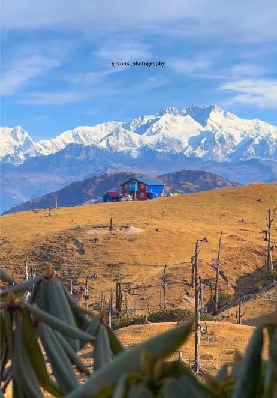
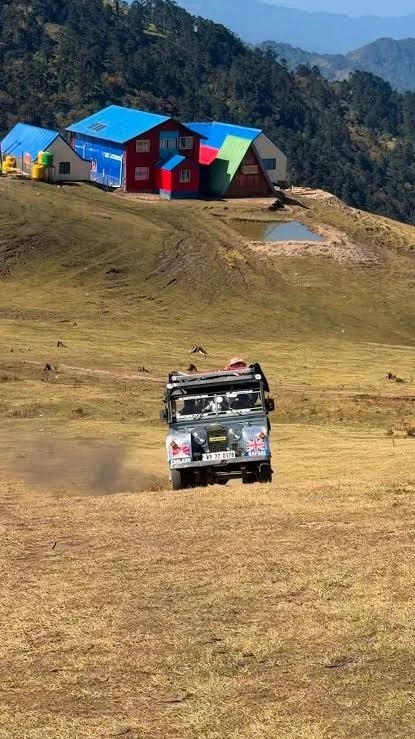
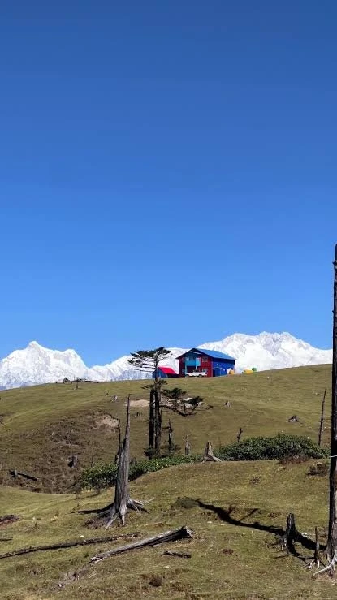
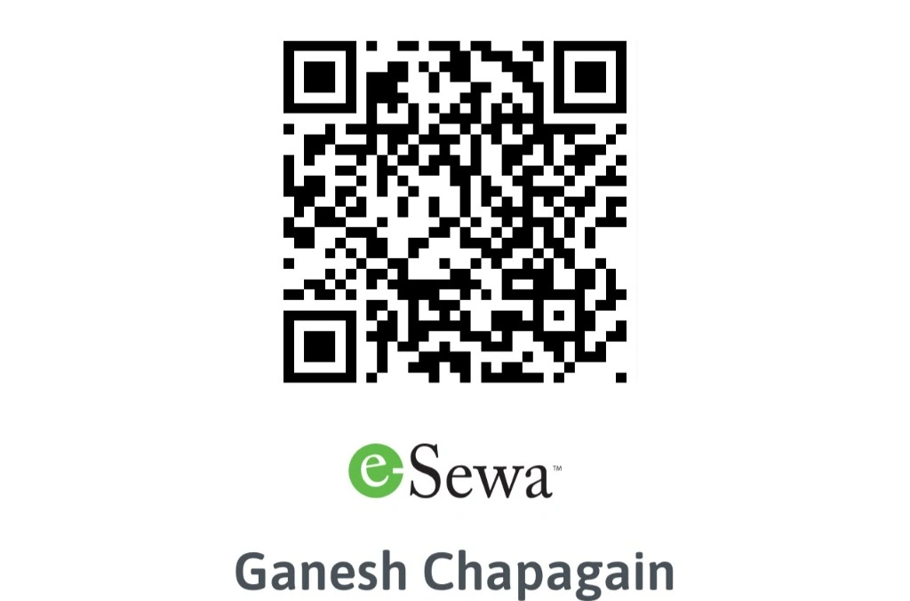

Preparing download...
0%

चारराते (३,४५० मिटर) पाँचथरको फालेलुङ गाउँपालिका र भारत (सिक्किम–पश्चिम बङ्गाल) को सीमामा अवस्थित एक अद्वितीय, शान्त र मनोरम उच्च हिमाली गन्तव्य हो। यहाँबाट विश्वको तेस्रो अग्लो शिखर कञ्चनजङ्घा (८,५८६ मिटर), कुम्भकर्ण (जन्नु) तथा मकालु हिमशृङ्खलाको मनमोहक दृश्यावलोकन गर्न सकिन्छ।
भीडभाडबाट टाढा रहेको यस क्षेत्रमा चौँरी र याक चर्ने खुला हिमाली खर्कहरू, गुराँसको जङ्गल, तथा आतिथ्यको रोमाञ्चक अनुभव लिन सकिन्छ। यहाँका स्थानीय लज तथा होमस्टेहरू (विशेष गरी याक लज, चारराते) पदयात्रीहरूका लागि न्यानो बास, स्थानीय परिकार र सूर्योदय हेर्ने उत्कृष्ट विश्रामस्थल हुन्।
Kanchenjunga, Jannu, Makalu & Everest range.
Pristine yak pastures & rhododendron forests.
Iconic vintage Land Rover mountain route.
Hot Himalayan tea, Sherpa food & hearth fires.


Phidim → Charrate Trail Map नि:शुल्क र खुला राख्न सहयोग गर्नुहोस्
